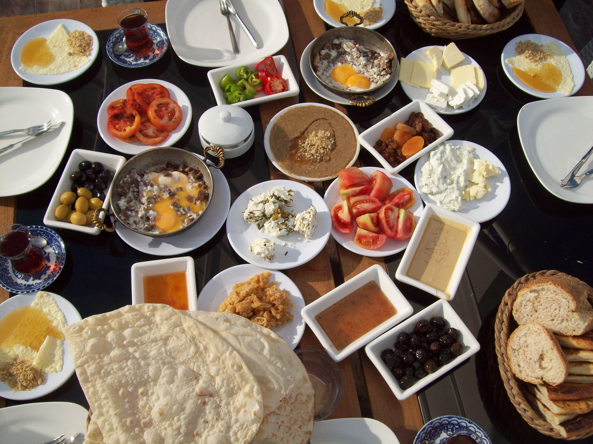
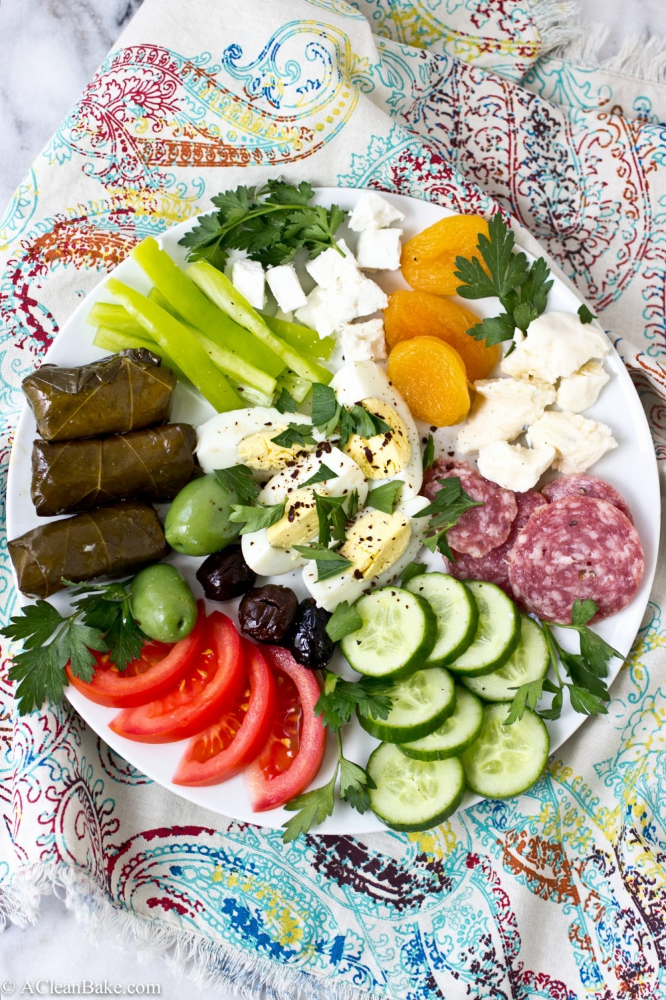
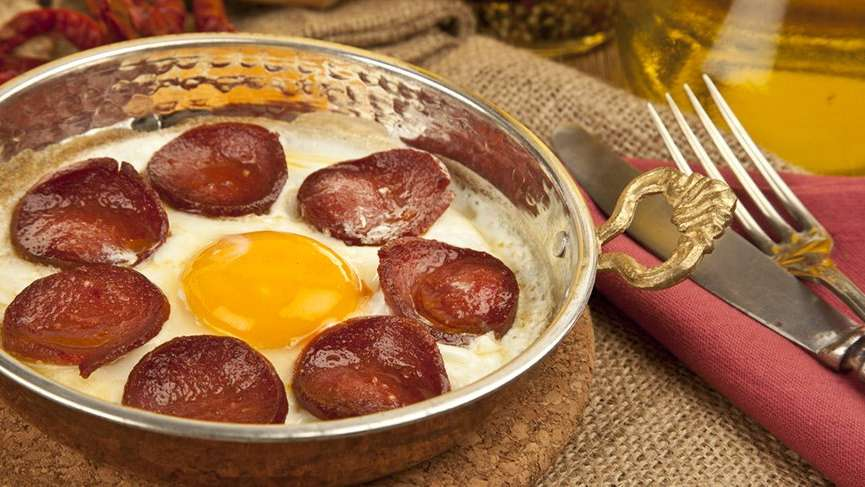

What Does a Typical Turkish Breakfast Look Like?
Turks love eating. And since breakfast is the most important meal of the day, they know how to extend and add variety to it. Covering a not so small amount of land, we can see some local differences in for instance the type of the cheese, olives or even the bread. Yet all regions have one or more things in common. 
Basics of a Turkish Breakfast
For Americans, brunch is the great equalizer. It’s where the hungover mingle with the early-birds, all in the noble pursuit of shelling out $13 or more for a tiny plate of waffles. It comes with its own set of rituals, like patiently pausing for the friend who needs to photograph her plate, and calculating how much alcohol you can drink without surrendering your Sunday to a state of unyielding misery.
For Turks, kahvalti (breakfast) happens every single day of the week, and it’s just as much a ritual on Wednesday as it is on Sunday. It’s why I wasn’t allowed to grab a Pop Tart on my way to school (and cereal was never an option).I ate a little bit of cheese, a little jam, eggs and a few olives before my mother would send me on my way. On weekends, the spreads became even more decadent, and we would often go through several pots of tea before the pide bowl was empty.
For starters a well prepared tea is a must. Turkish coffee has its name from this nation, but when it comes to breakfast, Turks are definitely tea people.
The most common type of bread is white bread. However, in an attempt to eat healthier, different kinds of grain breads like rye became widespread.
The rest of the ingredients are white cheese (similar to feta), old cheese (kaşar peyniri), black and/or green olives (zeytin), butter, honey, jam, an omlette or boiled eggs (yumurta), sliced tomatoes and/or cucumbers.
Spice It Up With Sucuklu Yumurta
 For the ones who like to spice it up, a Turkish breakfast favorite is sucuk cooked on a pan mostly with eggs (sucuklu yumurta). Sucuk is dried sausage made of ground beef with garlic and a variety of spices like red pepper, cumin and sumac. It may be somewhat spicy and fatty, but it sure is awfully delicious.
Order a Turkish Breakfast Plate
You can enjoy a Turkish breakfast almost everywhere in Istanbul. From cafes to pastry shops as well as most of the restaurants serve breakfast. Either on a breakfast plate (kahvaltı tabağı) or as a buffet meal with more variety added to the items listed above.
Some people also serve börek on the side. Börek is made of thin sheets of dough, filled with cheese, minced meat and/or vegetables, wrapped and baked or cooked.
The word for breakfast in Turkish is kahvaltı. It can be translated as kahve–altı being under-coffee, meaning the food you eat before drinking coffee. So a nice long Turkish breakfast should of course end with a cup of well-made Turkish coffee.